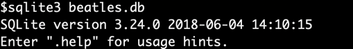

COMP 2404 - Fall 2019 Tutorial 05
Data Modeling with SQLite
© L.D. Nel 2019
Rev 1: It is worth noting that the sqlite3.exe console app supports a .read command just like our assignment interface. It can be very convenient to write SQL querys in a text file and then use .read to execute them.
Description:
The development client of our term project has decided they will use an SQLite database to house and persist the data about recordings and playlists. In this tutorial we will introduce you to using the SQLite command shell application that can be used to work with directly with SQLite relational databases.
SQLite is a small footprint, serverless relational database. It is the most popular database in the world. There are more instances of SQLite databases running than all other databases combined. The number of active SQLite databases is estimated to be in the trillions.
An SQLite database consists of a single file containg all its data. The SQLite sqlite3.exe command line application allows you to access an sqlite database through a simple command line interface. From the shell you can execute both SQL commands on the data along with some useful shell specific "dot" commands (not unlike the ones we've been creating in our assignments).
This tutorial illustrates an application with a command line interface that is a popular way to directly access an SQLite database. Using this application you will create a script for the language we've designed in assignments 1 and 2.
In the next tutorial we will look at accessing the SQLite database directly from our C++ application code.
Installing sqlite3.exe Shell
SQLite should already be built into any Linux installation and is installed by default on the Mac. I've only ever downloaded the sqlite3.exe binary file for windows machines (described below).
To verify that the sqlite3.exe application is available on Linux or Mac open a terminal and exectute:
sqlite3
For example on my Mac:
On my Linux subsystem on Windows 10 sqlite3 was not installed yet but I was prompted to do so with sudo apt install sqlite3:
Again sqlite3 is generally part of Mac and Linux by default.
The following describes downloading the sqlite3.exe binary to run locally on Windows. Regardless, you need to have this application installed on your platform to proceed with the tutorial.
Installing SQLite command shell binary on Windows 10:
The sqlite3.exe is available at: https://www.sqlite.org/download.html and download the precompiled binaries for sqlite-tools:
Unzip the downloaded file and obtain the sqlite3.exe file. Place it in the directory you want to work from with your database. In our case with the beatles.db sample database.

Opening the Beatles Data Database
The tutorial files contain a beatles.db sqlite database file. This is the file you will open with the sqlite3.exe command line application.
From this point we assume you have the sqlite3.exe application installed and can run it.
Execute sqlite3 beatles.db to open the sqlite3 command interpreter on the beatles.db database.

(Alternatively you can just execute sqlite3 and then from within the shell open the beatles database with .open beatles.db.)
Now the database is open and you can operate on its data with SQL commands or use the dedicated shell "dot" commands.
SQL is the industry standard language for querying relational databases. On the other hand the "dot" commands are shell application command and have nothing to do with SQL.
See what tables the database consists of by executing .tables

To see the available "dot" commands exectute .help

Here is some "getting started" tutorial information about running the shell from the sqlite.org site: http://www.sqlite.org/cli.html
To see the schema of table songs execute .schema songs
Using SQL Commands
The following images show the E-R model of the beatles.db database, a legend, and a diagram model of the database table schema. They are similar to those presented with Assignment 2. (Recall these have nothing to do with objects in the object-oriented programming sense.)


Relational databases organize their data as tables. The schema of the beatles.db database is shown below. The table schema shows the names of the tables and the columns and their headings for each table. Underlined columns are the intended key for the table.

To select (and show) all the rows and columns of the recordings table execute:
select * from recordings;
Note SQL commands don't start with a "dot" and always end in a semi-colon. (Because they end in semi-colon you can span them over multiple console input lines.) The following documentation on the sqlite.org site shows the SQL commands it supports and their syntax: http://www.sqlite.org/lang.html

Notice the format is not very nice.
You can use the .mode column and .header on commands to put the output in column mode and show the column name header. Re-run the select command:

You will notice from time to time some data is cut-off because of the column width. You can use the .width command to set the width (in characters) of each column:
Problem 1
Recall in our assignments we invented a bash-style command for adding a song to the application:
add -s "The Girl From Ipanema"
Here add would be the command,the -s flag designates a song and "The Girl From Ipanema" the title of the song.
Suppose you wanted a script with all such commands to populate your app with the songs contained in the beatles.db database. Here is a strategy you could follow:
1) Run an SQL query to find all the songs.
2) Format the query output to resemble your assignment command language.
3) Output the query result to a text file.
Lets do these steps:
Step 1) Execute the following query to list all the data in the songs table:
select * from songs;

(Only a few entries of the result are shown)
Next let's be selective and only select the song id and titles.
select sid,title from songs;

Step 2)
Next we can output additional information with the select. Here we will only select the title of the song but concatenate "add -s" in front of it using the SQL || concatenation operator (notice in SQL strings are delimited by single quotes but in C++ strings are delimited by double quotes).
select 'add -s ' || title from songs;
You may see something like the following because the mode is still column and the width is set too small:

Switch to list mode by executing .mode list and then execute the SQL select * from songs;

Notice this time the song table "columns" are simply separated by a "|".
Now use this mode to create your script commands:
select 'add -s ' || title from songs;
Remove the header column by executing .header off (You are not going to want the column headers appearing in your script file.)

Finally command language in our assignments requires that multi-word song titles be in double quotes.
select 'add -s "' || title || '"' from songs;

You have now output the data in the script format of our C++ assignment script language.
Step 3)
Finally lets write the script to a text file. Redirect the output to a text file by executing:
.output songScript.txt
re-execute the select query
select 'add -s "' || title || '"' from songs;
This time the output will not appear because a file songScript.txt will have been created and the output directed to it.
Finally redirect the output back to stdout:
.output stdout

Your directory will not contain your script file:
Which should look like this:

So you have just created a script in your C++ assignment language which could be used to populate your app with the same songs as the beatles.db database.
Rev 1: Note the sqlite3.exe application also has a .read command which you can use to read and execute SQL statements from a text file.
Problem 2
An E-R model shows where data from different entities (tables) can be safely joined together. The relationships, indicated by the diamond shapes, allow the entities they connect to be safely joined. Notice how tracks has a relationship to the song they are a recording of:
Currently if you selected the information in the tracks table you would see:
select * from tracks;
However we want the song's title to also appear in the result. To do that we can run an SQL query that joins the tracks and songs entities along the attribute that forms the relationship.
select albumID, songID, track_number, songs.title from songs join tracks on songID=sid;
Finally to show the album title along with the song title and the track number where the song appears on the ablum you can join all three tables:
select recordings.title, track_number, songs.title from songs join tracks on songID=sid join recordings on albumID=id;
Repeat this process to show for each user's name the playlists they own. Then show for each user's playlist the songs that are on that playlist.
When you have completed these exercises show your work to the TA's to get credit for the tutorial.